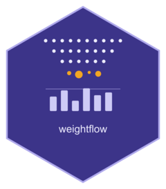

Non-probability samples
Source:vignettes/nonprobability-samples.Rmd
nonprobability-samples.RmdA statistical office publishes one weight column. Every indicator, every domain, every secondary user’s table comes out of the same column: that is what keeps a published figure internally consistent with the ones around it, and it is why a user can compute an estimate the office never published.
The methods that make a non-probability sample usable pull the other way. Doubly robust and machine-learning adjustments are outcome-specific: the best weight for poverty is not the best weight for employment, and the literature hands you one weight column per study variable. An office cannot disseminate that.
This article builds the reconciliation weightflow implements: a single column, doubly robust, exactly consistent with the known population control totals, that serves every study variable at once, together with the replicate weights that let a user attach a standard error to it. It also shows where the construction stops working, and how the package tells you.
The two files
Nothing here is possible without a probability reference: a survey that measures the same auxiliaries as the volunteers and carries real design weights. The two files are complementary, and neither is sufficient alone.
![The volunteer file and the probability reference]()
A volunteer sample that is wrong in four different ways
We draw volunteers from the bundled population so that
men and the young over-participate, and we track four indicators of very
different character: a mean, a proportion, a rare
proportion, and one that the selection hits head on. None of them is
used to decide who volunteers: participation depends on sex
and age alone, which is what makes the problem
correctable.
set.seed(1)
pop <- population
pop$poor <- as.integer(pop$income < quantile(pop$income, 0.12)) # ~12%: the rare one
pop$retired <- as.integer(pop$age >= 65)
N <- nrow(pop)
take <- runif(N) < plogis(-1.9 + 0.9 * (pop$sex == "M") - 0.025 * (pop$age - 45))
vol <- pop[take, ] # the volunteers: no weights at all
ri <- sample(which(!take), 800)
ref <- pop[ri, c("region", "sex", "age")] # the reference: no study variables
ref$d <- N / 800 # its design weights
c(volunteers = nrow(vol), reference = nrow(ref))
#> volunteers reference
#> 1026 800
ind <- c("income", "employed", "poor", "retired")
truth <- vapply(ind, function(v) mean(pop[[v]]), numeric(1))
pct <- function(w) round(100 * (vapply(ind, function(v)
weighted.mean(vol[[v]], w), numeric(1)) / truth - 1), 1)
pct(rep(1, nrow(vol))) # relative bias (%) of the unweighted volunteer file
#> income employed poor retired
#> 2.3 -4.2 -7.5 -46.3The unweighted file is not uniformly wrong. It is wrong by different amounts in different directions, which is why a single correction factor cannot fix it and why the weight has to come from a model.
The reference is a sample, so give it its replicates
Before anything else: the reference carries sampling error of its own, and in this construction that error is not a detail. Every reference unit is a row of the participation model and a row of the projection that produces the calibration targets, so the whole weight depends on which reference units were drawn. Pass the reference’s replicate weights and the bootstrap propagates that; leave them out and the reference is treated as the population.
In production the replicates come from the reference survey’s own replicate file. Here the reference is a simple random sample, so they can be built from its design with the same function:
rep_ref <- bootstrap_weights(weighting_spec(ref, base_weights = d),
replicates = 40, seed = 11,
progress = FALSE)$replicates
sr <- reference_sample(ref, weights = "d", replicates = rep_ref)What it costs to skip this is measured below.
Step one: the pseudo-weight
step_pseudoweight() stacks the two files internally,
fits the probability that a unit belongs to the volunteer side rather
than the reference side, and turns it into the participation odds
(1 - p)/p. No manual pooling, no
bind_rows().
pw_only <- weighting_spec(vol, base_weights = NULL, nonprob = TRUE) |>
step_pseudoweight(reference = sr, formula = ~ region + sex + age,
engine = "logit") |>
prep()
c(sum_of_weights = sum(pw_only$final_weight), N = N)
#> sum_of_weights N
#> 4519.597 4495.000That check is the one to run before going further, and it is worth knowing why.
What the sum of the weights is telling you
Two decisions go into turning one fitted score into a weight, and
both are usually made by default rather than on purpose: whether the
reference enters the stacked file with its design
weights or at weight one, and whether the volunteer’s weight is
the odds (1 - p)/p or the plain inverse
1/p. Neither is visible afterwards. The control totals
close to numerical precision either way, no weight looks odd, and the
interval looks reasonable.
The sum of the pseudo-weights separates them, because each construction leaves a different arithmetic trace:
![Three ways to turn one fitted score into a weight, and the trace each leaves]()
The first two are one line apart, because
1/p = (1 - p)/p + 1:
ref1 <- ref; ref1$one <- 1 # the reference stacked at weight one
pw_one <- weighting_spec(vol, base_weights = NULL, nonprob = TRUE) |>
step_pseudoweight(reference = reference_sample(ref1, weights = "one"),
formula = ~ region + sex + age) |>
prep(warn = FALSE)
round(c(odds = sum(pw_only$final_weight) / N,
plain_inverse = (sum(pw_only$final_weight) + nrow(vol)) / N,
reference_at_1 = sum(pw_one$final_weight) / N,
n_vol_over_N = nrow(vol) / N,
n_ref_over_N = nrow(ref) / N), 4)
#> odds plain_inverse reference_at_1 n_vol_over_N n_ref_over_N
#> 1.0055 1.2337 0.1781 0.2283 0.1780The inverse overshoots by exactly the volunteer share of the population, and the weight-one reference collapses to exactly the reference’s own sampling fraction. That is why the check has to be read to three significant figures and before any calibration: afterwards the control-total block imposes the population total and all three look identical. weightflow builds the first construction, and the ratio is in the step’s diagnostics.
The distortion from stacking the reference at weight one disappears when the reference is self-weighting, or when the calibration’s control totals happen to span its design strata. So the louder mistake is the one a later step can absorb, and the quieter one is not.
Flexible learners are available for the participation model
(engine = "tree", "forest",
"boost", with crossfit), exactly as for
response propensities.
Step two: one calibration that carries every variable
The pseudo-weight alone is consistent if the participation model is right. A calibration is consistent if the working model for the outcome is right. Doing both is doubly robust: correct if either holds.
The move that keeps it one column is to put all K study variables into the same linear calibration system. Each gets its own working model, i.e. its own predictors and its own learner, and the predictions enter as columns of one stacked matrix alongside the known control totals. One system, one solution, one weight.
![The multipurpose doubly robust weight as a single recipe]()
In code, that whole picture is one
step_model_calibration():
cens <- list(sex = as.data.frame(table(sex = pop$sex)),
region = as.data.frame(table(region = pop$region)))
spec <- weighting_spec(vol, base_weights = NULL, nonprob = TRUE) |>
step_pseudoweight(reference = sr, formula = ~ region + sex + age,
engine = "logit") |>
step_model_calibration(
x_formula = ~ sex + region, # the KNOWN control totals: met exactly
x_totals = cens,
models = list( # one working model per study variable
income = y_model(income ~ age + sex + region, engine = "glm"),
employed = y_model(employed ~ age + sex + region, engine = "glm")),
population = sr,
crossfit = 3)
fit <- prep(spec)
w <- fit$final_weightOne column. Here is what it does to all four indicators, including the two that were never modelled:
rbind(unweighted = pct(rep(1, nrow(vol))),
uni_weight = pct(w))
#> income employed poor retired
#> unweighted 2.3 -4.2 -7.5 -46.3
#> uni_weight 1.9 0.9 -4.8 3.9The two indicators with a working model are corrected, and so is
retired, which has none: the pseudo-weight and the control
totals carry it. poor improves least, and that is the
general pattern rather than an accident of this draw. The cost of
sharing one weight concentrates on the rarest indicator, which is the
one that most deserves a weight of its own when the margin of error
matters.
The exactness is not approximate. prep() records every
constraint and what the weights achieved:
head(fit$steps[[2]]$diagnostics, 7)
#> constraint type target achieved
#> (Intercept) (Intercept) X (consistency) 4495.0 4495.0
#> sexM sexM X (consistency) 2184.0 2184.0
#> regionSouth regionSouth X (consistency) 1250.0 1250.0
#> regionEast regionEast X (consistency) 927.0 927.0
#> regionWest regionWest X (consistency) 748.0 748.0
#> income income y (model) 87647256.2 87647256.2
#> employed employed y (model) 1762.7 1762.7Where it stops working: the rank ceiling
Exact consistency is not free, and it does not degrade gracefully. It is either met or lost, for every variable at once. The reason is a rank condition.
Write q for the dimension of the span of the predictors
the working models use and dim col(A) for the number of
known control totals. With linear working models fitted in
sample, every prediction lies inside that one span, so the
stacked system can only add
K ≤ q − dim col(A)
variables before it becomes rank deficient. Past that point the control totals are not approximately met: they are missed.
![The rank ceiling and the two ways out of it]()
This is not a theoretical caution. It happens on these 1,000
volunteers: the control totals here are ~ sex + region, and
the working models use ~ age + sex + region, so the span
has 6 directions, the control totals take 5, and the ceiling is
K = 1. Watch the second variable break it, and watch
the two escapes:
mk <- function(ys, rhs = "~ age + sex + region")
setNames(lapply(ys, function(v)
y_model(as.formula(paste(v, rhs)), engine = "glm")), ys)
dev <- function(models, crossfit = NULL) {
f <- prep(weighting_spec(vol, base_weights = NULL, nonprob = TRUE) |>
step_pseudoweight(reference = sr, formula = ~ region + sex + age) |>
step_model_calibration(x_formula = ~ sex + region, x_totals = cens,
models = models, population = sr, crossfit = crossfit),
warn = FALSE)
d <- f$steps[[2]]$diagnostics
max(abs(d$achieved - d$target) / abs(d$target)) # worst constraint, relative
}
signif(c(K1 = dev(mk("income")),
K2 = dev(mk(c("income", "employed"))),
K2_crossfit = dev(mk(c("income", "employed")), crossfit = 3),
K2_richer_basis = dev(mk(c("income", "employed"),
"~ age + I(age^2) + sex * region"))), 2)
#> K1 K2 K2_crossfit K2_richer_basis
#> 0.0000 0.0011 0.0000 0.0000Three of the four close to numerical zero, which is what exact means
here. K2 does not close at all, and the size of what it
leaves on the table is not arbitrary: the model block is constrained to
totals estimated on the reference while the control-total block
is constrained to totals known from the census, and the two
agree only up to the reference’s sampling error. That is the shortfall
you see.
Four numbers, and they fix the specification for production: put the known control totals in the exact-consistency block, give the working models richer predictors, and cross-fit. A working model that is linear in exactly the consistency control totals adds no information and breaks exactness.
What sharing costs
Once the system is well conditioned, adding variables to it is cheap. The price shows up in the dispersion of the weights, not in the control totals:
ys <- c("income", "employed", "poor", "retired")
cost <- t(vapply(seq_along(ys), function(k) {
f <- prep(weighting_spec(vol, base_weights = NULL, nonprob = TRUE) |>
step_pseudoweight(reference = sr, formula = ~ region + sex + age) |>
step_model_calibration(x_formula = ~ sex + region, x_totals = cens,
models = mk(ys[seq_len(k)]), population = sr,
crossfit = 3), warn = FALSE)
wk <- f$final_weight
c(K = k, deff = design_effect(wk)$deff, max_min = max(wk) / min(wk[wk > 0]),
negatives = sum(wk < 0))
}, numeric(4)))
round(cost, 2)
#> K deff max_min negatives
#> [1,] 1 1.20 6.45 0
#> [2,] 2 1.26 11.02 0
#> [3,] 3 1.27 12.18 0
#> [4,] 4 1.47 26.71 0Two failure modes end that, and they look nothing alike:
- Collinearity. Two learners fitted to strongly correlated outcomes give nearly parallel prediction columns. The achieved control totals start drifting from their targets and the package raises an ill-conditioning warning. Cross-fitting repairs this one.
- Feasibility. The control totals keep closing to numerical precision while units start receiving negative weights and the weight range grows by orders of magnitude. Nothing in the control-total diagnostics moves, and the design effect stops being readable as an effective sample size once negatives appear. Bounding the calibration repairs this one; cross-fitting does not.
So monitor the negative count and the weight range next to the deviation from the control totals, and treat the first negative weight as the stopping signal. Bounded calibration together with cross-fitting is the production default.
What the reference contributes
Now the arm we set up at the start. Same recipe, same draws, same point weights; the only difference is whether the reference enters the bootstrap with its replicates or with its design weights alone.
sr_fixed <- reference_sample(ref, weights = "d") # no replicates
spec_fixed <- weighting_spec(vol, base_weights = NULL, nonprob = TRUE) |>
step_pseudoweight(reference = sr_fixed, formula = ~ region + sex + age) |>
step_model_calibration(x_formula = ~ sex + region, x_totals = cens,
models = mk(c("income", "employed")),
population = sr_fixed, crossfit = 3)
b_full <- bootstrap_weights(spec, replicates = 20, seed = 2, progress = FALSE)
b_fixed <- bootstrap_weights(spec_fixed, replicates = 20, seed = 2, progress = FALSE)
c(reference_resampled = boot_mean(b_full, "income")$se,
reference_fixed = boot_mean(b_fixed, "income")$se)
#> reference_resampled reference_fixed
#> 404.8120 321.6691The point estimates are identical, because it is the same weight column. Only the standard error moves, and it moves in one direction: holding the reference fixed can only make the interval narrower, because a source of variability has been dropped rather than estimated.
How much narrower depends on how much of the total uncertainty the reference carries. On real household-survey structure with a reference of 800 against 1,500 volunteers, the published study behind this construction measures the estimated standard error divided by up to 3.7, taking a nominal 95% interval down to 42% coverage. Sampling error in an estimated target does not announce itself as an unmet constraint, which is where an office would look for it.
bootstrap_weights() now says so when the replicates are
missing, and jackknife_weights() says something stronger: a
delete-one replicate has no reference replicate to pair with, so it
holds the reference fixed whatever you pass. For this construction, use
the bootstrap.
Dissemination
The replicate weights are the deliverable, not just the point column. For a non-probability source they are the only way a secondary user can attach a standard error to an estimate the office never published.
out <- collect_replicate_weights(b_full, scramble = TRUE)
c(rows = nrow(out), columns = ncol(out))
#> rows columns
#> 1026 32
names(out)[1:4]
#> [1] "person_id" "household_id" "psu" "region"scramble = TRUE permutes the replicate columns so the
file cannot be used to reconstruct the resampling pattern, which is a
disclosure channel in a clustered design.
How large is this sample, really?
A big opt-in sample can carry a small effective one.
data_defect() gives the Meng (2018) view: the error is
governed by the correlation between the outcome and participation, not
by the raw count. That correlation is not observable from the sample, so
the answer is a range, not a number.
data_defect(pw_only)
#> Data-defect diagnostics (non-probability sample)
#> n = 1,026 N = 4,520 f = 0.2270
#> strongest covariate-participation correlation: |r| = 0.226 (sexM)
#> effective size by residual data-defect correlation (Meng 2018):
#> |rho| = 0.001 -> n_eff = 293,680 (*)
#> |rho| = 0.005 -> n_eff = 11,747 (*)
#> |rho| = 0.010 -> n_eff = 2,937 (*)
#> |rho| = 0.050 -> n_eff = 117
#> |rho| = 0.100 -> n_eff = 29
#> (rho on the target variable is not observable; read as an ignorance range)
#> (*) below |rho| = 0.0149 = 1/sqrt(N), the defect a simple random
#> sample of this population shows by itself: those rows describe a
#> sample more representative than a random one, so read them as a
#> ceiling the formula allows and the design cannot reach.Hold something out, because the weights cannot see selection bias
Double robustness protects against a misspecified model given ignorability, not against its failure. If participation depends on something no model observes, every estimator here is biased, and the weights will not tell you. Watch: participation now depends on income, which appears in no model and in no control total.
set.seed(2)
z <- as.numeric(scale(pop$income)) # the driver nothing observes
t2 <- runif(N) < plogis(-1.6 + 0.8 * z)
v2 <- pop[t2, ]
r2 <- pop[sample(which(!t2), 800), c("region", "sex", "age")]; r2$d <- N / 800
sr2 <- reference_sample(r2, weights = "d")
f2 <- prep(weighting_spec(v2, base_weights = NULL, nonprob = TRUE) |>
step_pseudoweight(reference = sr2, formula = ~ sex + age) |>
step_model_calibration(x_formula = ~ sex,
x_totals = list(sex = as.data.frame(table(sex = pop$sex))),
models = list(income = y_model(income ~ sex + age)),
population = sr2, crossfit = 3), warn = FALSE)
w2 <- f2$final_weight; d2 <- f2$steps[[2]]$diagnostics
c(max_total_deviation = max(abs(d2$achieved - d2$target)),
negative_weights = sum(w2 < 0),
design_effect = round(design_effect(w2)$deff, 2))
#> max_total_deviation negative_weights design_effect
#> 0.00 0.00 1.01The control totals are met exactly, no unit gets a negative weight, and the design effect is unremarkable. Nothing in that line is wrong and nothing in it warns you, which is structural rather than a shortcoming of these particular statistics: a diagnostic built from the weights and the covariates behind them cannot detect a dependence on a variable absent from both.
A quantity the adjustment was never asked to
reproduce can. Here region is in no model and in
no control total, and its population distribution is known:
round(100 * (as.numeric(tapply(w2, v2$region, sum)) /
as.numeric(table(pop$region)) - 1), 1)
#> [1] 29.9 -9.0 -35.5 -3.8Tens of per cent off, on a figure the weighted file should have reproduced for free. Reserving one known population quantity as a held-out benchmark is the cheapest protection available; the data-defect range above is another. Holding a control total out in order to test against it costs precision there, and the alternative is a weight whose only evidence of validity is that it reproduces what it was told to reproduce.
The whole thing
sr <- reference_sample(ref, weights = "d", replicates = rep_ref)
spec <- weighting_spec(volunteers, base_weights = NULL, nonprob = TRUE) |>
step_pseudoweight(reference = sr, formula = ~ age + sex + region,
engine = "forest") |>
step_model_calibration(
x_formula = ~ age + sex, x_totals = census_totals,
models = list(
poverty = y_model(poverty ~ age + sex + region + size, engine = "forest"),
employed = y_model(employed ~ age + sex + region + size, engine = "boost")),
population = sr, crossfit = 3)
w <- prep(spec)$final_weight
boot <- bootstrap_weights(spec, replicates = 200)
out <- collect_replicate_weights(boot, scramble = TRUE)Seven calls: one weight column, doubly robust, exact on the census control totals, with replicate weights that propagate the participation model, the K working models and the reference’s own sampling.
In short
- Read the sum of the pseudo-weights against the estimated population, to three significant figures, before any calibration. It is the only point at which the construction is still visible.
- Put the known control totals in the consistency block; give the working models richer predictors and let the learner supply the non-linearity.
- Cross-fit whenever a model is an adaptive learner. It protects coverage and it raises the number of variables one weight can carry.
- Watch the negative count and the weight range, not only the deviation from the control totals. The first negative weight is the stopping signal.
- Treat the size of the reference as part of the specification, and pass its replicate weights, or state that you did not.
- Report the replication-bootstrap variance, never a fixed-total formula.
- Hold one known population quantity out of the adjustment and test against it. No diagnostic computed on the weights can do that job.
- Disseminate the replicate weights with the microdata.
References
Elliott, M. R. and Valliant, R. (2017). Inference for non-probability samples. Statistical Science 32(2), 249-264.
Ferreira, J. P. (2026). Two silent decisions in weighting an opt-in sample against a probability reference sample. Survey Practice. doi:10.29115/SP-2026-0052
Ferreira, J. P. (2026). One weight for many variables: why multipurpose calibration of non-probability samples needs flexible working models, and what sharing it costs. Statistical Journal of the IAOS, accepted.
Ferreira, J. P. (2026). weightflow: reproducible, recipe-aware survey weighting for official statistics in R. Statistical Journal of the IAOS, advance online. doi:10.1177/18747455261484262
Meng, X.-L. (2018). Statistical paradises and paradoxes in big data (I). Annals of Applied Statistics 12(2), 685-726.
Wang, L., Valliant, R. and Li, Y. (2021). Adjusted logistic propensity weighting methods for population inference using nonprobability volunteer-based epidemiologic cohorts. Statistics in Medicine 40(24), 5237-5250.
Wu, C. and Sitter, R. R. (2001). A model-calibration approach to using complete auxiliary information from survey data. JASA 96(453), 185-193.